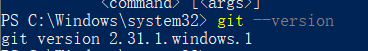

突然间想创建个自己的博客，在网上搜索了一些信息，大部分都是使用Hexo + Github创建，之前并没有接触过，于是开始尝试搭建博客，下面是我整个搭建博客的过程及遇到的一些问题。
以下参考了知乎文章超详细Hexo+Github博客搭建小白教程
安装nvm
nvm顾名思义是node版本管理工具，为了本地能支持多版本node运行，本文选择使用nvm安装node。
- 下载地址
- 安装nvm
- 选择同意协议

- 选择nvm安装目录（注：安装目录不要存在空格，否则虽然能安装成功，但node版本切换时会出现问题）

- 选择node安装目录（注：安装目录不要与nvm安装目录相同，否则会出现command not found问题，如无必要无需更改）
- 安装成功
打开终端输入nvm -v验证是否安装成功
- 选择同意协议
- 需要注意的点
- 使用nvm指令需用管理员身份运行命令管理器，否则可能引起不必要的错误。（windows搜索cmd或powershell，点击右键选择以管理员身份执行）
- nvm安装目录不能存在空格，否则使用nvm use ***时会出现问题
- node安装目录不能与nvm安装目录相同，否则可能出现command not found问题
安装Node.js
- 使用nvm安装node
- nvm list available 查询可安装node版本
- nvm install latest 64 安装最新版64位node

- 若安装Node.js过程中速度过慢，可通过以下方式提高nvm下载node速度（注意结尾有斜杠）
nvm node_mirror http://npm.taobao.org/mirrors/node/
nvm npm_mirror https://npm.taobao.org/mirrors/npm/ - 验证是否安装成功
- 打开终端输入node -v和npm -v验证是否安装成功，出现版本号即安装成功

- 打开终端输入node -v和npm -v验证是否安装成功，出现版本号即安装成功
安装Git
为了能发布我们的网页到GitHub上，需要用到版本控制工具 - Git
- 下载地址
- 安装Git，默认安装即可
- 验证是否安装成功
- 打开终端输入git –version验证是否安装成功。

- 打开终端输入git –version验证是否安装成功。
注册Github账号
接下来要进入正题了，创建个人博客，需要先申请Github账号，在GitHub中新建repository用来存放我们的个人博客网站。
- 注册Github账号
- 新建repository
- 注册登录GitHub后，点击右上角＋号，New repository
- 输入自己的项目名字
.github.io（注：必须以.github.io结尾）,记得把Add a README file选项选上
- 注册登录GitHub后，点击右上角＋号，New repository
- 创建成功后，点击Settings > Pages > Choose a theme（注：若想使用hexo主题可略过此步）

安装Hexo，初始化blog
- 在任意地方新建文件夹存放自己的blog文件，例如D:\fiona\GitHub\blog
- 在blog文件目录下右键点击Git Bash Here，打开git控制台，安装Hexo
npm i hexo-cli -g

- 验证是否安装成功
hexo -v
- 初始化网站及安装网站必备组件，浏览blog（默认博客样式如下图所示，若使用自定义hexo模板，可跳过该步骤）
- git控制台输入hexo init初始化网站
hexo init
npm i
- 输入hexo g生成静态网页，hexo s打开本地服务器（之后接下来所有对hexo网站修改后均需运行这两个命令）
hexo g
hexo s

- 通过浏览器打开localhost:4000查看blog

- git控制台输入hexo init初始化网站
配置hexo模板
现在网络上有很多优秀的hexo模板可以使用，可自行搜索自己喜欢的模板对博客进行应用，这里我使用的是hexo-theme-melody。
在blog文件目录下右键点击Git Bash Here，clone hexo-theme-melogy
git clone -b master https://github.com/Molunerfinn/hexo-theme-melody themes/melody
install相关plugin
npm install hexo-renderer-pug hexo-renderer-stylus
在blog文件目录下的_config.xml中找到theme节点，修改为melody。
theme: melody
此时运行hexo g及hexo s后，浏览器通过localhost:4000查看blog可看出样式已经改变了。

连接GitHub与本地
虽然blog的样式已经变为我们所希望的那样，但实际上hexo网站与我们之前所建立的GitHub此时是相互独立的。为了使本地hexo网站能被push到GitHub上，需要连接GitHub与本地。
设置用户名及邮箱，blog文件目录下右键打开git bash，输入以下命令（注：用户名和邮箱根据你注册GitHub的信息自行修改）
git config –global user.name “fiona”
git config –global user.email “fiona1240@hotmail.com“生成密钥SSH Key，这里需要手动输入放key的文件，直接把括号中的地址copy下就行了（注：这里我已经生成过了，所以问我是否覆盖）。
ssh-keygen -t rsa -C “fiona1240@hotmail.com“
获取密钥（注：如果生成密钥的时候输入的目录为其他自定义目录，则需要改为自定义目录文件）
cat ~/.ssh/id_rsa.pub
在GitHub中新建SSH，打开GitHub > 头像下Settings > SSH and GPG keys > new SSH key。
Title任意输入，Key输入第三步中获取到的密钥

验证是否配置成功，输入以下命令，若出现用户名则代表成功。
ssh -T git@github.com
Hexo blog中配置GitHub相关信息
- GitHub网站中通过Settings > Pages中找到你的GitHub网址
- Hexo blog文件目录下的_config.yml中找到url节点，修改为GitHub网址
- Hexo blog文件目录下的_config.yml中找到deploy节点，修改为如图（注：branch为你GitHub中默认的branch）
- GitHub网站中通过Settings > Pages中找到你的GitHub网址
需要注意的点
- 新生成密钥后，git clone或push可能会遇到“The authenticity of host ‘github.com (192.30.255.112)’ can’t be established.”的问题，此时直接输入yes回车就可以正常使用了。
- 若在GitHub中无法找到网址，需在Settings > Pages中source下选择branch。
写文章，发布文章
- Hexo blog目录下右键打开Git Bash Here，安装hexo扩展用于deploy本地文章到GitHub上。
npm i hexo-deployer-git
- Hexo blog文件目录下的_config.yml中找到post_asset_folder节点，修改为true（注：若不修改则运行new post时无法生成同名文件夹）。
- Git Bash Here命令行中输入hexo new post “article title”，新建文章。
- 打开blog目录下\source_posts的目录中，可发现多了一个以article title命名的文件夹及.md文件，文件夹用于存放图片等数据，.md文件即为文章文件支持markdown语法。
- 根据markdown语法编写完文件后，根目录下运行hexo g生成静态网页，hexo s本地浏览效果，也可直接输入hexo d部署到GitHub上。这时打开github.io主页就能看到发布的文章了。
以上就是我配置博客的整个过程啦，接下来基本就是对于melody主题的配置了，文档写的很全，按照文档来进行基本都可以配置出一个很好看的模板了，也欢迎大家留言一起讨论怎么设置。撒花完结。